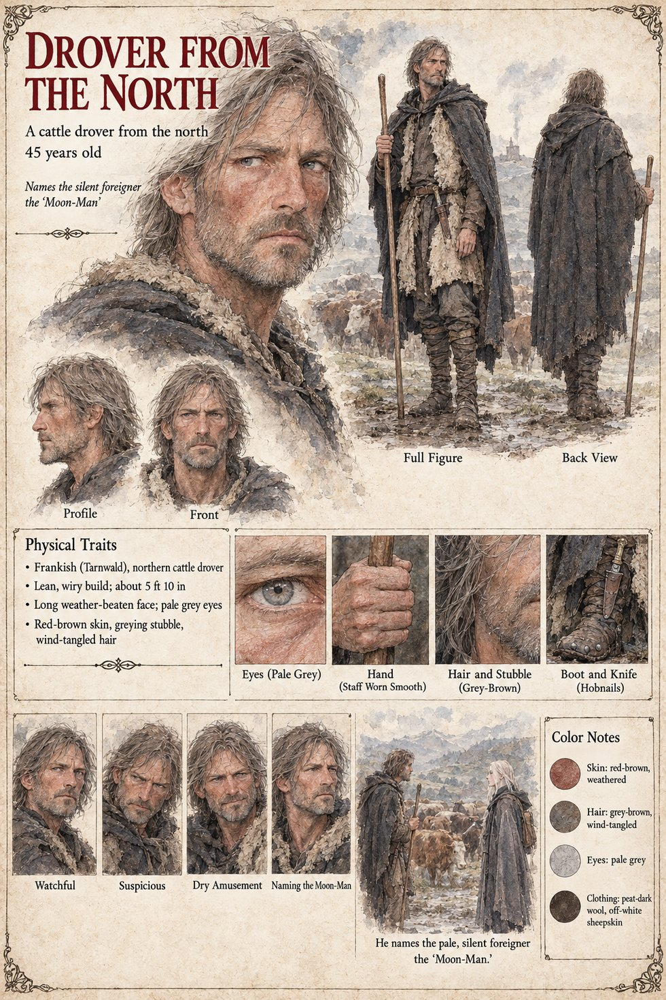

Drover from the North
A cattle drover from the north · unnamed · 45 years old
A lean, wiry Frank of Tarnwald, forty-five, about 5 ft 10 in, with a long weather-beaten face, pale grey eyes, red-brown skin, greying stubble and wind-tangled hair, in a peat-dark wool cloak over off-white sheepskin, with a staff worn smooth, hobnailed boots and a knife in his boot. The Gazetteer has him in Cooper's Row at dusk, seeing the foreigner standing beside a cart as though waiting for it to speak, and naming him the Moon-Man; the Old Sot's page has the name go round the room of the Three Sheaves twice and be understood to have been always known.
The sheet's scene, He names the pale, silent foreigner the ‘Moon-Man’, is set somewhere else: a hillside, cattle behind him, the drover facing a cloaked figure with a pack, long pale hair under a grey hood. The sheet does not name the figure; the foreigner of the other pages is Higaide, and the publication notes list the Moon-Man among his aliases, with the Eastman and the Schoolmaster, and say that the drover names him from his pale long face and his silence. His expression panels run Watchful, Suspicious, Dry Amusement and Naming the Moon-Man.
Written from the sheet, from what the other Case 4181 pages and the Gazetteer already say, and from the character notes in the case's publication-prep file; the manuscript itself was not to hand. His age of 45, Frankish origin in Tarnwald, lean wiry build, long weather-beaten face, pale grey eyes and peat-dark wool with sheepskin are the sheet's own.
Appears In

Related Subjects


Related Records

In the Three Sheaves on a winter night Waldrada wipes a mug behind the bar while the room gives the black salt its names: a barge-hand's Night-Seed, a carter's Widow's Ashes and a journeyman cooper standing on a bench's splinter of Solan's fire, with a carter's wife leaning in, a drover from the north naming the stranger the Moon-Man, and an old sot dozing by the fire.